| 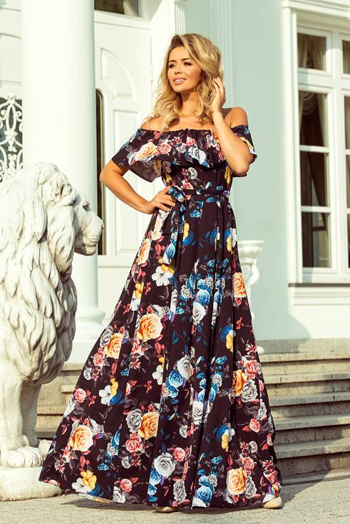 | 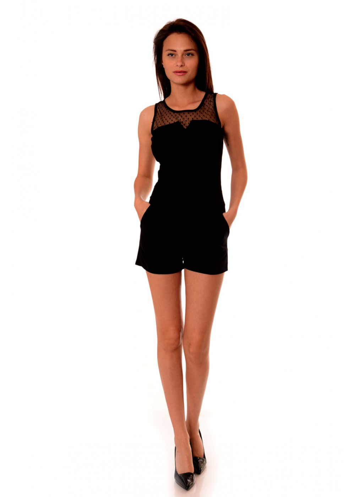 | 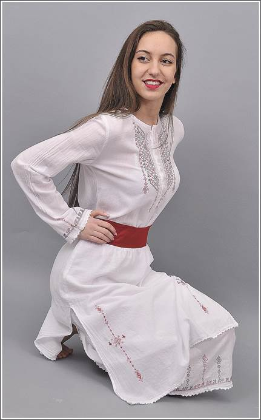 | 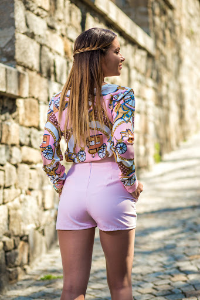 |
| Макси рокля с паднали рамене | Къс гащеризон | Бели бродирани дрехи | Къси панталонки с висока талия |
| 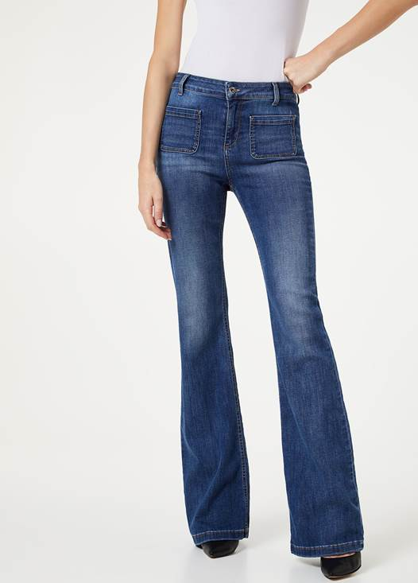 | 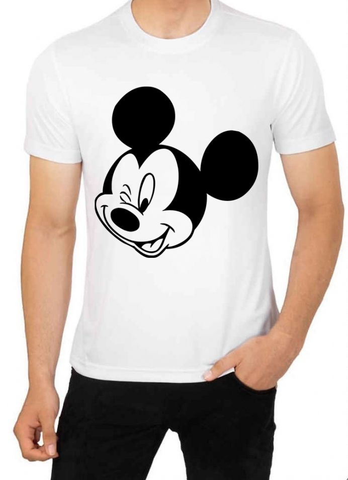 | 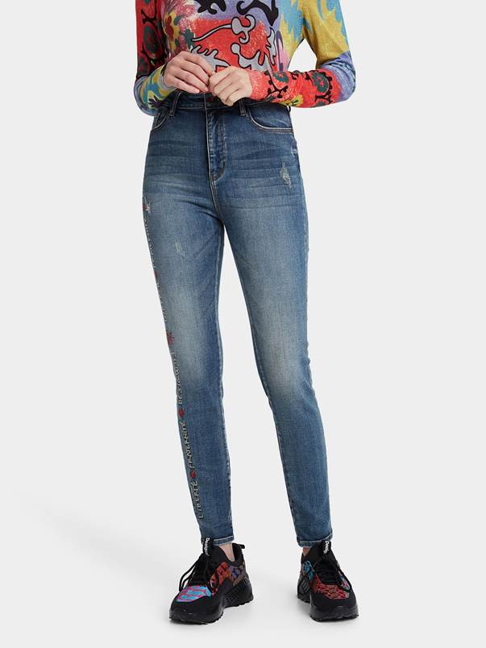 | 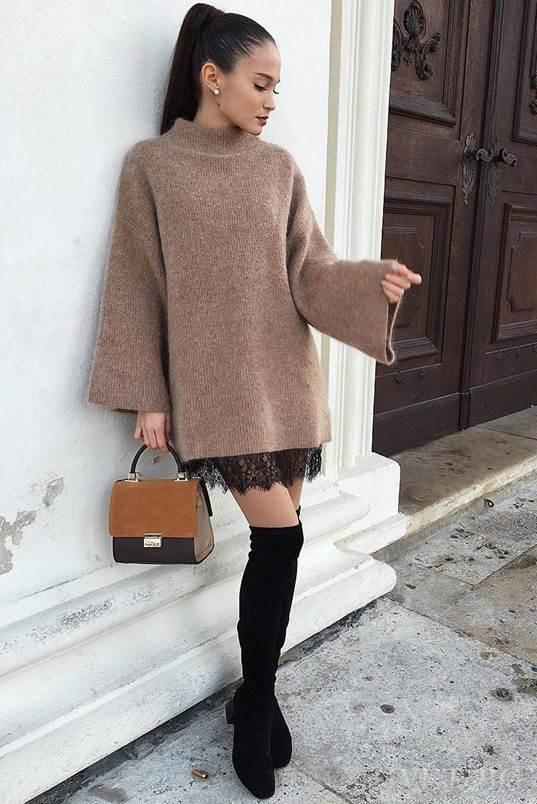 |
| Дънки тип "чарлстон" | Тениски с щампи на анимационни герои | Свободни дънки с висока талия | Плетена туника |
| 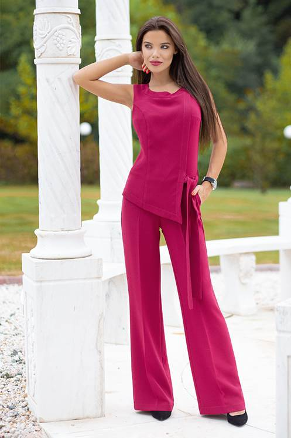 | 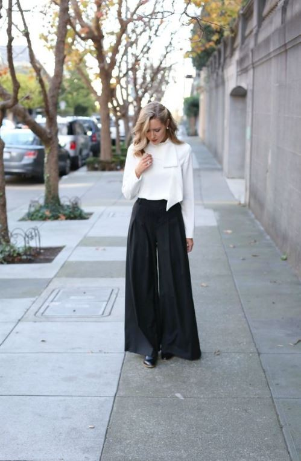 | 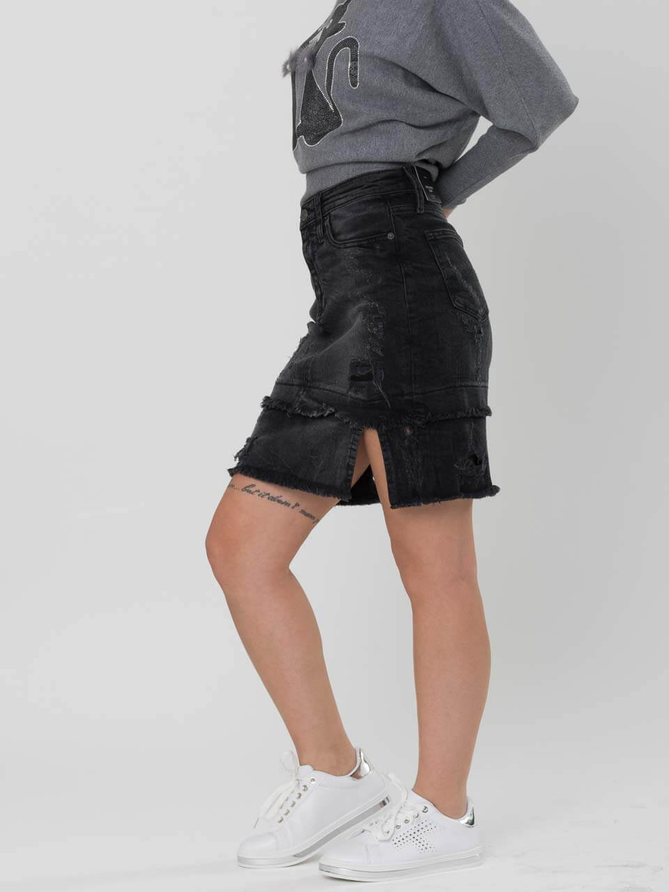 | 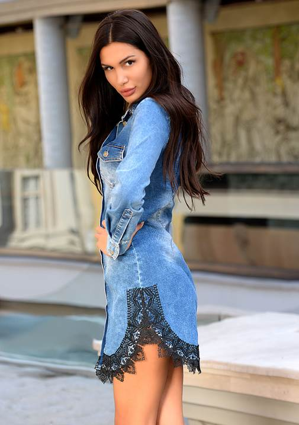 |
| Дълъг гащеризон | Широки "хипи" панталони | Къса пола с кръпки | Дънкова рокля |